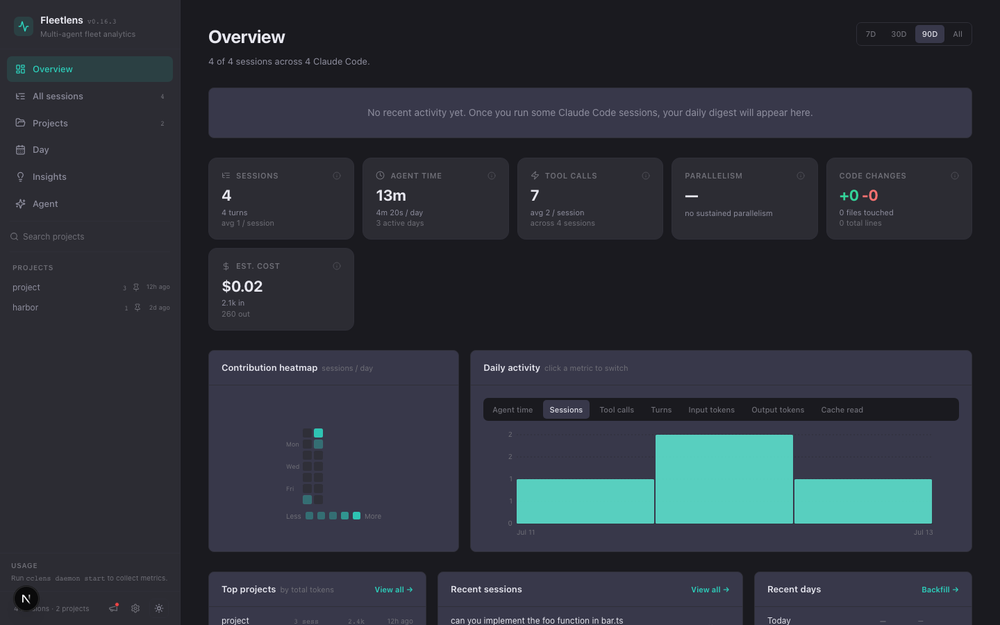

Start here: from a blank machine to your first dashboard.
This walkthrough assumes the terminal is new to you. You will install one prerequisite, install Fleetlens, open the local dashboard, and make one normal coding-agent session appear in it.
Fleetlens is a dashboard that reads the history your coding agent already writes. It is not the coding agent itself. To see data, you need at least one supported agent installed and authenticated on this computer.
Before you begin
You need
A Mac, Windows PC, or Linux computer; an internet connection for installation; and permission to install software.
Your agent needs
One supported local agent with session history. Claude Code, Codex, Gemini CLI, Antigravity, Cowork, and Grok Build are supported sources.
1. Open a terminal
A terminal is a text window where you give your computer instructions by typing commands. You will copy a command from this page, paste it into the terminal, and press Enter.
macOS
Press Command + Space, type Terminal, and press Enter.
Windows
Open the Start menu, search for Windows Terminal or PowerShell, and open it.
Linux
Open your application menu and search for Terminal. Many desktops also use Ctrl + Alt + T.
What you should see
A blinking cursor after a prompt such as $, %, or >. Type after the prompt; do not type the prompt itself.
Commands are case-sensitive. Paste one block at a time. When a command asks for your computer password, type it and press Enter; the characters may stay invisible while you type. That is normal.
2. Check for Node.js and npm
Fleetlens is distributed through npm, the package manager that comes with Node.js. In your terminal, paste this block:
node --version
npm --versionYou should see two version numbers. Fleetlens requires Node.js 20 or newer.
Install the current Node.js LTS release from nodejs.org. Choose the installer for your operating system, accept the defaults, close this terminal, open a new terminal, and run the two version commands again.
3. Install Fleetlens
Now install the published Fleetlens command globally so it is available from any folder:
npm install --global fleetlens
fleetlens versionThe second command should print the installed Fleetlens version. If npm shows a progress bar, wait for it to finish before typing the next command.
Do not paste random fixes from the internet. The safest beginner path is to reinstall Node.js using the official installer or a Node version manager, then repeat the install. If this is a managed work computer, ask your administrator to install Fleetlens for you.
4. Start the local dashboard
Start Fleetlens and ask it to open your browser:
fleetlens start --openThe command starts two local services: the dashboard and a background usage daemon. Keep this terminal window open while you are learning; you can stop the services later with fleetlens stop.
If the browser does not open, type http://localhost:3321 into the address bar. The dashboard is local to this computer; it is not a public website.
5. Give Fleetlens one session to read
Open your normal coding-agent application or terminal workflow and run a small, non-sensitive task in a project. For example, ask the agent to explain a README or list the files in a test project. You do not need to import anything into Fleetlens.
After the agent finishes, return to Fleetlens. The Overview page reads the local transcript files and should show a session, a project, and some activity. A brand-new machine may show zero sessions until the agent has completed its first turn.

The first checkpoint is the Overview page. The data in this image is synthetic and exists only to illustrate the shape of the dashboard.
6. Confirm that everything is healthy
Return to the terminal and run:
fleetlens status
fleetlens daemon statusYou should see a running web server and daemon. The dashboard can analyze transcripts even if usage data is not available yet; plan meters depend on the provider's own local authentication.
What to do next
Explore the Local Edition features, then keep the dashboard running when you want a private fleet view.
Continue to Join Team Edition. Nothing is shared until you choose projects and press Start syncing.
Use fleetlens stop to stop both local services. Run fleetlens start again whenever you want to reopen the dashboard. Your agent history is not deleted.